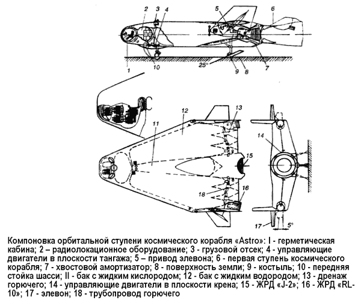

Проект «Astro»
На тот же самый сектор рынка космических перевозок, который собиралась завоевать фирма «Мартин», претендовало еще несколько крупнейших авиационных корпораций США.
В 1964 году со своим проектом транспортного космического корабля многоразового использования «Астро» («Astro») выступила компания «Дуглас».
Проект предусматривал выполнение кораблем различных задач в космосе путем осуществления маневров на орбите.
Предполагалось обеспечить высокую надежность летательного аппарата в целом при небольшой стоимости ступеней, безопасное отделение кабины экипажа и грузового отсека в аварийных условиях, возможность посадки на существующие аэродромы США, подготовку к последующему полету в сравнительно небольшое время, а также простоту обслуживания и хорошие перспективы развития.
Обязательным считалось также обеспечение гибкости выполнения задачи без аэродинамических и конструктивных изменений системы.
Характеристики «Астро»: полная масса — около 370 тонн, полезный груз — 16,6 тонны, общая длина — 49,1 метра, длина первой ступени — 29,04 метра, длина орбитальной ступени — 20,74 метра, масса первой ступени при посадке — 32,5 тонны, второй — 14 тонн. Взлет вертикальный, максимальная высота — 550 километров.
Первая ступень — крылатый разгонный аппарат, вторая — крылатый космический корабль, пилотируемый экипажем.
Крылатый разгонный аппарат снабжен одним основным ЖРД «М-1» фирмы «Аэроджет» («Aerojet») и двумя ЖРД «J-2» фирмы «Рокетдайн» («Rocketdyne»), используемыми как верньерные во время работы основного двигателя. Кислородные баки наддуваются гелием, подогретым в теплообмен никах специальной системой. Водородные баки во время ра боты ЖРД наддуваются подогретым водородом, выходящим из двигателя. Двигатели разгонного аппарата работают непре рывно до выключения командой, и повторный запуск не производится.
Крылатый космический корабль (орбитальная ступень) в качестве основного двигателя имеет ЖРД «J-2» и два ЖРД RL-10 фирмы «Пратт энд Уитни» («Pratt and Whitney»). Эти двигатели должны были позволять осуществить повторный запуск при небольшом остатке топлива в баках, поэтому перед каждым повторным запуском для обеспечения нормальных условий при входе в насосы баки должны наддуваться.
Обе ступени аппарата выполнены геометрически подобными, имеют треугольное крыло с модифицированным симметричным профилем, обеспечивающим нулевую подъемную силу и нулевой кабрирующий момент во время разгона аппарата первой ступенью.
Ступени аппарата соединены между собой четырьмя взрывными болтами, пропущенными сквозь специальные фланцы лонжеронов.
Кабина экипажа и полезная нагрузка расположены в носовой части аппарата, чем обеспечивается хороший обзор и быстрое аварийное покидание корабля. Обшивка кабины многослойная, верхнее покрытие из молибдена охлаждается радиационно и не требует абляционной защитной обмазки.
Между верхним покрытием и стенкой кабины имеется слой изолирующего наполнителя, образующий два пространства: первое — между верхним покрытием и изолирующим слоем — продувается охлаждающим газом, во второе — между изолирующим слоем и стенкой кабины — впрыскивается вода, которая охлаждает стенку кабины за счет скрытой теплоты парообразования.
Согласно расчету при входе в атмосферу внутренняя стенка кабины будет иметь предельную температуру 5060° С, а верхнее покрытие — 1220 °C.
Чтобы обеспечить высокую частоту полетов на орбиту при малом количестве аппаратов, цикл наземной подготовки должен быть выбран оптимальным В рамках планируемой стоимости из расчета 240 полетов в год парк должен состоять из 12 разгонных и 24 орбитальных ступеней.
Цикл наземной подготовки каждой разгонной ступени, выполняющей 20 полетов в год, составит 18 суток.
Сборка ступеней космического корабля осуществляется в горизонтальном положении на прицепной транспортной) установке, имеющей подъемное устройство, источник энергии и пусковой стол. Корабль устанавливается соосно с выхлопной отклоняющей системой, затем комбинация «пусковой стол-летательный аппарат» поворачивается в положение для пуска.
Полет космического аппарата «Астро» мыслился его создателям следующим образом. Запуск предполагалось производить с мыса Канаверал в восточном направлении. Через семь секунд после взлета начинается гравитационный поворот, после окончания которого устанавливается угол атаки, соответствующий нулевой подъемной силе и сохраняющийся до выключения двигателей разгонной ступени. Непосредственно перед разделением запускаются двигатели «RL-10» и, когда тяга достигнет максимального значения, взрываются соединительные пироболты. До запуска двигателя «J-2» разгонная ступень должна начать разворот, чтобы уйти от струи.
Разделение происходит на высоте 82 километров на расстоянии 110 километров от места старта. На режиме планирования разгонная ступень может пройти 830 километров до аэродрома посадки; продолжительность полета при этом составит десять минут. Посадочная скорость на максимальной подъемной силе — 163 км/ч.
Космический корабль после отделения от разгонной ступени продолжает выход на орбиту по оптимальной траектории. После выполнения операций на орбите торможением он переводится на траекторию входа в атмосферу и посадки.
Движение по этой траектории происходит с одновременным поворотом аппарата относительно вектора скорости через крыло.

Траектория входа в атмосферу до перехода на режим равновесного планирования может быть разделена на три фазы: вход, переходный режим и режим постоянной высоты.
В фазе входа корабль ориентируется на максимальный тангаж. Угол входа в атмосферу выбирается в зависимости от допустимой температуры и расстояния до места посадки. Если на круговой орбите высотой 555 километров сообщить космическому кораблю тормозной импульс 106 м/с, корабль войдет в атмосферу на высоте 122 километров под углом — 3°. Далее корабль поворачивается относительно вертикальной оси на 180° носом по полету и устанавливается на угол атаки 45°, затем угол атаки меняется по определенному закону, чтобы в процессе выравнивания до высоты 70 километров подъемная сила оставалась постоянной.
На высоте 70 километров корабль поворачивается относительно вектора скорости, чтобы уменьшить вертикальную составляющую аэродинамической подъемной силы. Маневр по крену с одновременным разворотом и выходом корабля из плоскости орбиты продолжается до тех пор, пока угол наклона траектории полета не станет равным нулю. Высота, на которой заканчивается переходная фаза, зависит от допустимой температуры и потребной дальности. При таком маневрировании только на нижнюю поверхность корабля действует максимальный скоростной напор, поэтому эта поверхность проектируется на максимальный удельный тепловой поток. В фазе постоянной высоты полета угол атаки увеличивается с уменьшением скорости. Необходимая боковая дальность может быть получена маневром по крену, но постоянная высота при этом не сохраняется.
При скорости 4,6–6,7 км/с корабль выходит на траекторию равновесного планирования. С помощью управления углами атаки и крена уточняется расчет на посадку. В конце фазы равновесного планирования производится посадка с выключенным двигателем на выбранный аэродром.
Управляя с помощью аэродинамических сил параметрами траектории входа в атмосферу, можно осуществить посадку космического корабля в любом месте на площади 9100 X 3700 километров. Максимальная боковая дальность при угле крена 45° равна 3700 километрам.
Разработка и доводка системы «Астро» должна была проводиться в соответствии с программой, предусматривающей три этапа. На первом этапе фирма «Дуглас» планировала использовать один экспериментальный аппарат, пилотируемый двумя астронавтами и совершающий горизонтальный и вертикальный взлет. Аппарат совершал бы трансконтинентальные и трансокеанские перелеты, в ходе которых конструкторы собирались протестировать бортовые системы.
На втором этапе парк экспериментальных машин включал два одинаковых аппарата, прошедших «обкатку» ранее.
Теперь система могла бы осуществлять вертикальный взлет, при этом вторая ступень с экипажем из двух человек должна была выходить на орбиту высотой 540 километров с полезным грузом 910 килограммов.
На третьем, заключительном, этапе систему «Астро» планировалось испытывать в окончательном полномасштабном варианте.